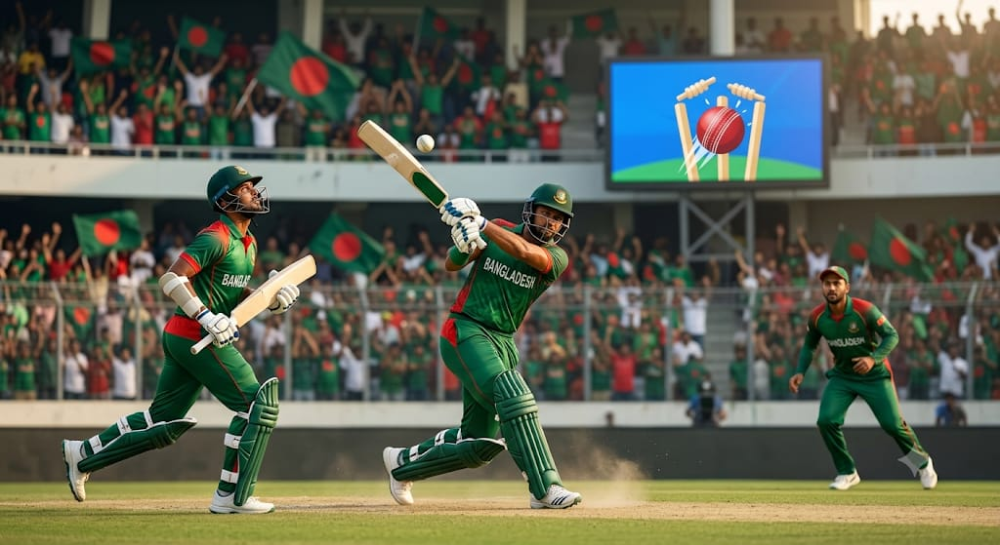

'এশিয়ান গেমস ২০২৬ সামনে রেখে বাংলাদেশ পুরুষ ক্রিকেট দলের স্কোয়াড ঘোষণা করা হয়েছে।
১৫ সদস্যের এই দলে অধিনায়ক হিসেবে দায়িত্ব পেয়েছেন লিটন দাস।
দলে জাতীয় দলের কয়েকজন অভিজ্ঞ ক্রিকেটারের পাশাপাশি গুরুত্বপূর্ণ খেলোয়াড়দের রাখা হয়েছে।
নাজমুল হোসেন শান্তও দলে ফিরেছেন।
বাংলাদেশের ক্রিকেট সমর্থকদের জন্য স্কোয়াড ঘোষণার খবরটি বেশ গুরুত্বপূর্ণ।
এশিয়ান গেমসের ক্রিকেট প্রতিযোগিতা আগামী ১৭ সেপ্টেম্বর থেকে শুরু হওয়ার কথা রয়েছে।
বাংলাদেশ সরাসরি মূল প্রতিযোগিতায় অংশ নেওয়ার সুযোগ পেয়েছে।
আগের এশিয়ান গেমসেও বাংলাদেশ ক্রিকেট দল পদক জিতেছিল।
সেবার বাংলাদেশ পুরুষ ক্রিকেট দল ব্রোঞ্জ পদক অর্জন করেছিল।
এবার আরও ভালো ফল করার লক্ষ্য নিয়ে মাঠে নামতে চাইবে বাংলাদেশ।
দলের নেতৃত্বে লিটন দাসের ওপর থাকবে বাড়তি দায়িত্ব।
ব্যাটিংয়ের পাশাপাশি অধিনায়ক হিসেবেও তাকে গুরুত্বপূর্ণ ভূমিকা পালন করতে হবে।
দলের তরুণ ও অভিজ্ঞ ক্রিকেটারদের মধ্যে সমন্বয় তৈরি করাও গুরুত্বপূর্ণ হবে।
এশিয়ান গেমসের মতো বড় আসরে প্রতিটি ম্যাচেই চাপ সামলানোর প্রয়োজন হবে।
বাংলাদেশের ক্রিকেটাররা আন্তর্জাতিক পর্যায়ে খেলার অভিজ্ঞতা কাজে লাগাতে চাইবেন।
সাম্প্রতিক সময়ে টি-টোয়েন্টি ক্রিকেটেও বাংলাদেশ দল বেশ কিছু গুরুত্বপূর্ণ ম্যাচ খেলেছে।
জিম্বাবুয়ের বিপক্ষে সর্বশেষ টি-টোয়েন্টি সিরিজে বাংলাদেশ ২-১ ব্যবধানে জয় পেয়েছিল।
সেই পারফরম্যান্স দলকে আত্মবিশ্বাস দিতে পারে।
এশিয়ান গেমসের আগে ক্রিকেটারদের প্রস্তুতিও গুরুত্বপূর্ণ হয়ে উঠবে।
দলের ব্যাটিং বিভাগে ধারাবাহিকতা ধরে রাখার চেষ্টা থাকবে।
একই সঙ্গে বোলিং বিভাগেও শক্তিশালী পারফরম্যান্স প্রয়োজন হবে।
টি-টোয়েন্টি ক্রিকেটে অল্প সময়ের মধ্যেই ম্যাচের পরিস্থিতি বদলে যেতে পারে।
তাই প্রতিটি ম্যাচে দ্রুত সিদ্ধান্ত নেওয়ার ওপর গুরুত্ব দিতে হবে।
লিটন দাসের নেতৃত্বে বাংলাদেশ দল নিজেদের সেরা ক্রিকেট খেলতে চাইবে।
দলের তরুণ ক্রিকেটারদের জন্যও এশিয়ান গেমস হতে পারে নিজেদের প্রমাণ করার বড় সুযোগ।
ভালো পারফরম্যান্স করলে ভবিষ্যতে জাতীয় দলের দরজাও আরও শক্তভাবে খুলতে পারে।
বাংলাদেশের সমর্থকদের প্রত্যাশা থাকবে দলটি এবার আরও ভালো ফল করবে।
এশিয়ান গেমসে পদকের লড়াইয়ে বাংলাদেশ কতটা এগোতে পারে, সেদিকেই থাকবে সবার নজর।
১৭ সেপ্টেম্বর থেকে শুরু হওয়া প্রতিযোগিতায় বাংলাদেশের ক্রিকেটারদের পারফরম্যান্স তাই বিশেষ আগ্রহের বিষয় হয়ে থাকবে। লিটন দাস — অধিনায়ক
তানজিদ হাসান
পারভেজ হোসেন ইমন
সাইফ হাসান
নাজমুল হোসেন শান্ত
তাওহিদ হৃদয়
মোসাদ্দেক হোসেন সৈকত
ইয়াসির আলী চৌধুরী
রিশাদ হোসেন
শেখ মেহেদী হাসান
নাসুম আহমেদ
মোহাম্মদ সাইফউদ্দিন
শরিফুল ইসলাম
মুস্তাফিজুর রহমান
হাসান মাহমুদ
সহ-অধিনায়ক: তাওহিদ হৃদয়:::